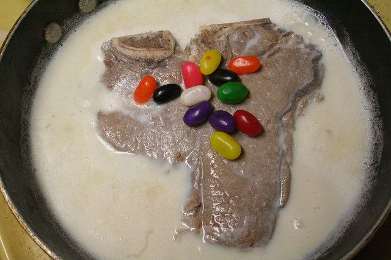

Milk Steak just like Charlie Kelley Loves

Here are some ingredients you would need to prepare
- 1 medium 8.8oz. (.25Kg) flat iron steak (top blade shoulder steak)
- 2 cup milk (preferably whole, called "4%")
- 1/4 cup honey
- 1/2 tsp cinnamon
- 1/2 tsp nutmeg
- 1 tsp vanilla extract
Here are some instructions on how to Prepare:
- Add the milk, honey, cinnamon, nutmeg, and vanilla to a medium sized saucepan.
- Heat up the mixture, stirring until the honey has completely dissolved.
- Bring the mixture to the boil.
- Carefully place the steak in the boiling milk mixture.
-
Bring the liquid back to the boil and reduce the heat so that the milk is simmering.
- Cook this medium-sized steak for five minutes on one side, stirring the top occasionally to stop a skin forming on the milk.
- Turn the steak over and cook for a further five minutes on the other side.
-
Check how well cooked your steak is. If you're after authenticity, the steak should be cooked "over hard" and so should not be pink at all.
- Allow the steak to rest for a few minutes.
- Garnish with jelly beans.